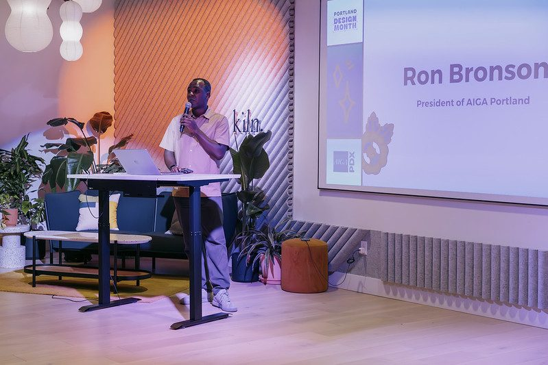
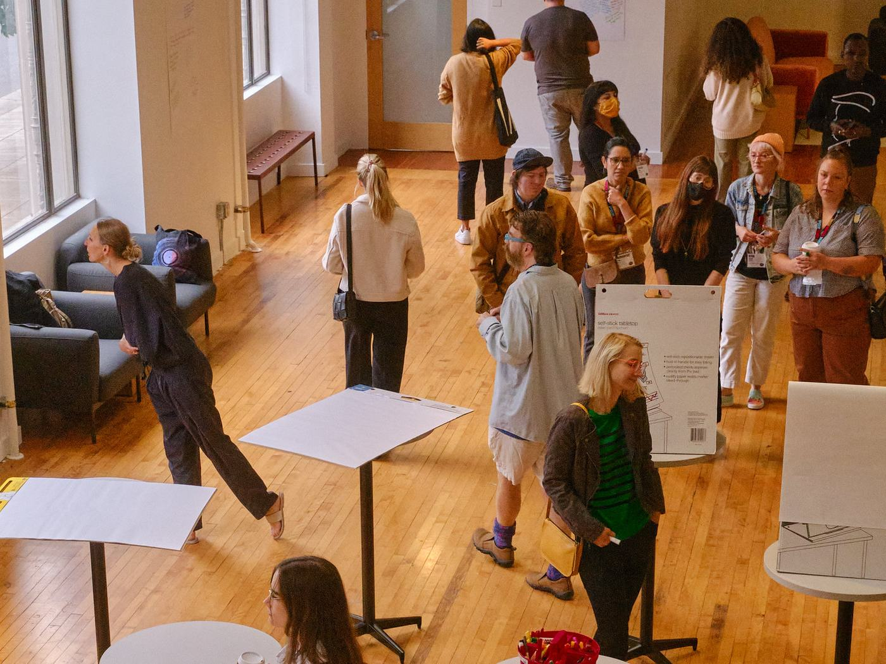
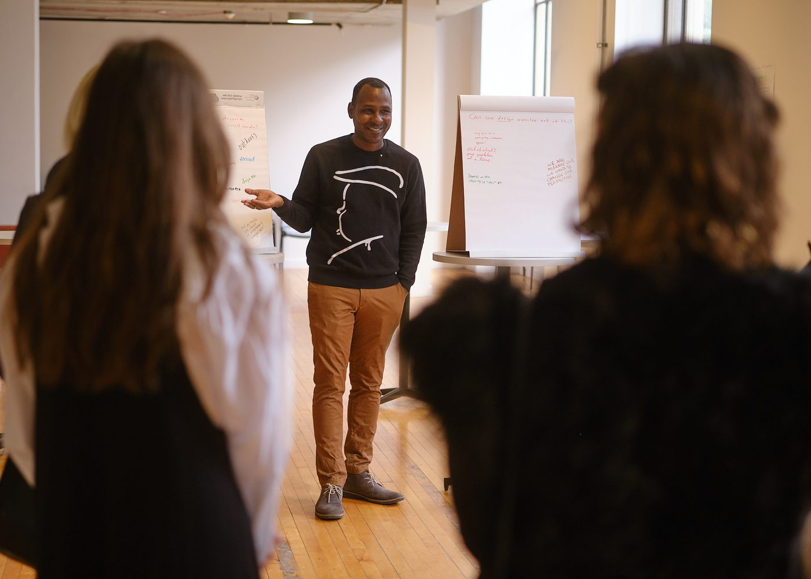

I teach at the University of Michigan’s Taubman College, where my graduate course, Public Mechanics, covers how public services actually work. I advise State Capacity AI.
For eight years I was at 18F, running one of the largest design organizations in the federal government — forty-plus designers and the managers who ran them — and later strategic operations across Technology Transformation Services.
I’ve been convening people for two decades. Design weeks, city-wide design months, unconferences, civic programs, in Indianapolis and Portland and nationally. Different cities, different sectors, same work: get the right people in a room and give them something worth arguing about. I build them to run without me.
The boards work the same way — AIGA chapters in two cities, community radio in Bloomington, a mayoral appointment to Portland’s Historic Landmarks Commission. So does the tennis. I coach it, and as a state co-chair in Oregon I wrote the proposal that moved the whole state to a team dual-match championship.